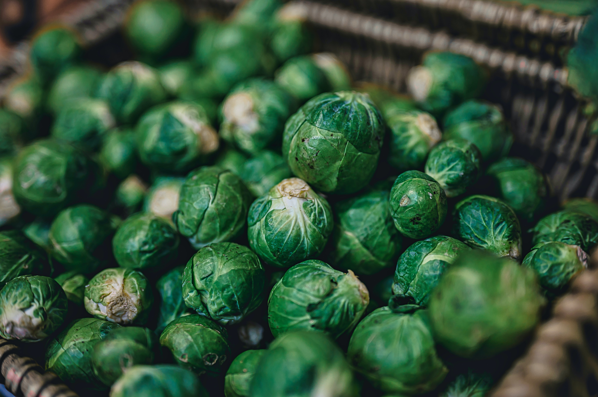

Chopped Brussels Sprouts

Who knew raw brussels sprouts could be so delicious?
Paired with a flavorful Dijon vinaigrette and a myriad of mix-ins, this
easy salad will be your new favorite way to get your veg on!
Ingredients
- 1 shallot, minced
- ¼ cup cider vinegar
- ¼ cup sunflower seed oil
- 2 tablespoons Dijon mustard
- ½ teaspoon honey
- ½ teaspoon salt
- ¼ teaspoon ground black pepper
- 6 cups Brussels sprouts, trimmed, halved, and sliced
- 2 Gala apples, cored and thinly sliced
- ½ cup dried cranberries
- ⅓ cup sliced almonds
- ⅓ cup raw sunflower seed kernels
- ⅓ cup shelled, raw pumpkin seeds
Steps
-
Whisk shallot, vinegar, oil, Dijon mustard, honey, salt, and pepper
together in a small bowl.
-
Place Brussels sprouts, apples, cranberries, almonds, sunflower seeds,
and pumpkin seeds in a bowl; pour vinegar mixture over and toss to
combine.
Home